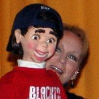

Reader Writes ...
7/4/2011
"I just want to say thank you for everything you (Maher Studios and Clinton Detweiler) have done for me through the years - without even knowing it.
I was a shy young girl who found Maher Studios at age 10. I took the Course on how to become a ventriloquist and started performing when I was 11. Ventriloquism helped me pay my way through undergraduate school as I performed in churches and schools across the East coast. While in college, ventriloquism took me to Hawaii and American Samoa to perform as a student missionary. All this just helped to build my self-confidence and self-esteem.
I am now an assistant principal in an elementary school, where I still perform with my dummy, Tony, made by Maher Studios. Thank you!" -
Theresa Burr Gardner (Scrapbk4fun)
I was a shy young girl who found Maher Studios at age 10. I took the Course on how to become a ventriloquist and started performing when I was 11. Ventriloquism helped me pay my way through undergraduate school as I performed in churches and schools across the East coast. While in college, ventriloquism took me to Hawaii and American Samoa to perform as a student missionary. All this just helped to build my self-confidence and self-esteem.
{kind=link}

I am now an assistant principal in an elementary school, where I still perform with my dummy, Tony, made by Maher Studios. Thank you!" -
Theresa Burr Gardner (Scrapbk4fun)